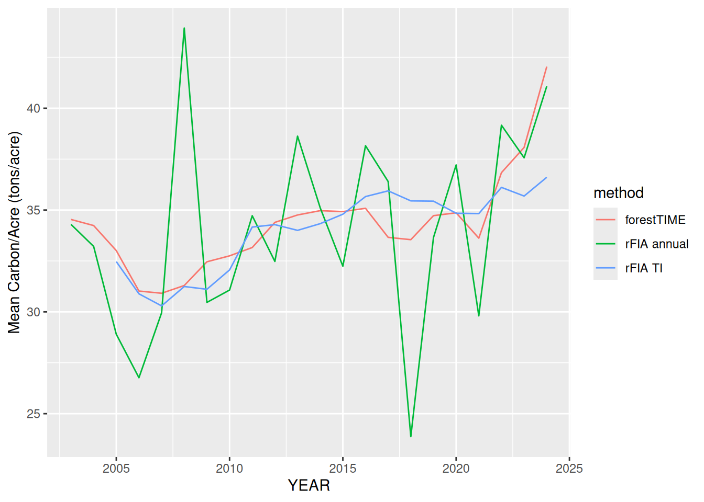

library(forestTIME)
#> ! forestTIME is an experimental package and currently a work-in-progress. It is
#> not an official product of the US Forest Service.
library(dplyr)
#>
#> Attaching package: 'dplyr'
#>
#> The following objects are masked from 'package:stats':
#>
#> filter, lag
#>
#> The following objects are masked from 'package:base':
#>
#> intersect, setdiff, setequal, union
library(rFIA)
library(ggplot2)How can we use the interpolated data produced by forestTIME to get popluation-level (i.e. state-level) per-area estimates?
Warning
The interpolated values produced by
forestTIMEare inferences and not samples, so it may not be appropriate to use (modified) design-based estimators, as we do in this vignette, which treat the data, including interpolated values, as a probablity sample.
Example data
We’ll use RI as an example state because it is small. We’ll just use the built-in example data that comes with forestTIME, but if you were to download your own and you wanted to use it with rFIA also, make sure to set extract = "rFIA" to extract all the tables needed for both forestTIME and rFIA.
fia_download(states = "RI", download_dir = "fia", extract = "rFIA")Important
rFIAproduces estimates of carbon from 33 – 40.7 tons/acre using design-based estimators. “Correct” estimates should be in this ballpark.rfia_RI <- readFIA( dir = system.file("exdata", package = "forestTIME"), states = "RI" ) agc_rfia_annual <- biomass( rfia_RI, totals = TRUE, method = "annual", treeType = "live", landType = 'forest', component = "AG", areaDomain = COND_STATUS_CD == 1 & INTENSITY == 1 ) |> mutate(method = "rFIA annual") |> select(method, YEAR, carbon_ton_acre = CARB_ACRE, carbon_total = CARB_TOTAL) #> Warning: The `.dots` argument of `group_by()` is deprecated as of dplyr 1.0.0. #> ℹ The deprecated feature was likely used in the dplyr package. #> Please report the issue at <https://github.com/tidyverse/dplyr/issues>. agc_rfia_ti <- biomass( rfia_RI, totals = TRUE, method = "TI", treeType = "live", landType = 'forest', component = "AG", areaDomain = COND_STATUS_CD == 1 & INTENSITY == 1 ) |> mutate(method = "rFIA TI") |> select(method, YEAR, carbon_ton_acre = CARB_ACRE, carbon_total = CARB_TOTAL) mean(agc_rfia_annual$carbon_ton_acre) #> [1] 34.03135 mean(agc_rfia_ti$carbon_ton_acre) #> [1] 34.01003
We’ll use the standard basic workflow to get estimated aboveground carbon for each tree in each year.
# Data prep
db <- fia_load(
"RI",
dir = system.file("exdata", package = "forestTIME")
)
data <- fia_tidy(db) #single tibble
#> ℹ Wrangling data
#> ✔ Wrangling data [178ms]
#>
# Expand to include all years between surveys and interpolate/extrapolate
# Adjust for mortality and estimate carbon.
data_midpt <- data |>
fia_annualize(use_mortyr = FALSE) |>
fia_estimate()
#> ℹ Prepping for estimating carbon
#> ℹ Adjusting for mortality
#> ℹ Interpolating between surveys
#> ℹ Expanding years between surveys
#> ✔ Expanding years between surveys [2.3s]
#>
#> ℹ Interpolating between surveys
✔ Interpolating between surveys [12.9s]
#>
#> ℹ Adjusting for mortality
✔ Adjusting for mortality [19.1s]
#>
#> ℹ Prepping for estimating carbon
✔ Prepping for estimating carbon [19.2s]
#>
#> ⠙ Estimating carbon: prepping data
#> ⠹ Estimating carbon: finding merchantable height
#> ⠸ Estimating carbon: predicting merchantable stem wood volume
#> ⠼ Estimating carbon: predicting stump wood and bark volume
#> ⠴ Estimating carbon: predicting sawlog stem wood volume
#> ⠦ Estimating carbon: predicting sawlog stem wood and bark volume
#> ✔ Estimating carbon: harmonizing components [15.8s]I’ll add domain indicator columns as is done in the rFIA demystified vignette so we calculate carbon in live trees per area of forested land using base intensity plots only. Reason:
We build separate domain indicators for estimating tree totals and area totals, because we can specify different domains of interest for both. For example, if we used our tree domain (live trees on forest land) to estimate area, then we would not actually be estimating the full forested area in RI. Instead we would estimate the forested area ONLY where live trees are currently present.
So we can’t just filter(STATUSCD == 1 & COND_STATUSCD == 1) to estimate carbon tons/acre.
Expansion factors
The FIA data provides users with expansion factors, EXPNS, to aid in scaling estimates up to state levels. There are two issues in using these provided EXPNS with our annualized data: 1) it is not straightforward to join the tables in to get the EXPNS column, and 2) there are now many more plots in each year, so the EXPNS column is no longer accurate (it is the acres of the entire state represented by each plot). Therefore, fia_annualize() re-calculates the EXPNS column as the total land area of the state divided by the number of plots in the interpolated data for that state in each year.
We think these EXPNS values can be used much in the same way as the ones in the “raw” FIA database.
data_midpt |>
select(YEAR, EXPNS) |>
group_by(YEAR) |>
summarize(EXPNS = unique(EXPNS)) |>
ggplot(aes(x = YEAR, y = EXPNS)) +
geom_line()You’ll notice that the calculated EXPNS follow a “U” shape rather than being constant. That is because in our interpolated data, there are fewer plots in the beginning and end of the timeseries because we do not extrapolate beyond a panel’s first and last inventory.
Using these expansion factors, we can follow the methods in the FIA demystified vignette.
tree_totals <- data_midpt |>
group_by(plot_ID, YEAR) |>
summarize(
# purposefully omits ajustment factor `aAdj` because it is assumed to be 1
carbPlot = sum(CARBON_AG * TPA_UNADJ * EXPNS * tDI / 2000, na.rm = TRUE), #tons/plot
)
#> `summarise()` has grouped output by 'plot_ID'. You can override using the
#> `.groups` argument.
area_totals <- data_midpt |>
group_by(plot_ID, YEAR) |>
# Keep only one row for each condition in each plot and year
distinct(CONDID, COND_STATUS_CD, CONDPROP_UNADJ, EXPNS, aDI) |>
summarize(
# purposefully omits ajustment factor `aAdj` because it is assumed to be 1
forArea = sum(CONDPROP_UNADJ * EXPNS * aDI, na.rm = TRUE) #acres/plot
)
#> `summarise()` has grouped output by 'plot_ID'. You can override using the
#> `.groups` argument.
agc_pop <- inner_join(tree_totals, area_totals) |>
group_by(YEAR) |>
summarize(
CARB_AG_TOTAL = sum(carbPlot, na.rm = TRUE), # tons/plot
AREA_TOTAL = sum(forArea, na.rm = TRUE) # acres/plot
) |>
# the units work out to still be tons(live carbon)/acre(forested land) even if the variable names are misleading
mutate(method = "forestTIME", carbon_ton_acre = CARB_AG_TOTAL / AREA_TOTAL) |>
select(
method,
YEAR,
carbon_ton_acre,
carbon_total = CARB_AG_TOTAL,
AREA_TOTAL
)
#> Joining with `by = join_by(plot_ID, YEAR)`
agc_pop
all <- bind_rows(agc_rfia_annual, agc_rfia_ti, agc_pop)
ggplot(all, aes(x = YEAR, y = carbon_total, color = method)) +
geom_line() +
labs(y = "Total Carbon (tons)")
ggplot(all, aes(x = YEAR, y = carbon_ton_acre, color = method)) +
geom_line() +
labs(y = "Mean Carbon/Acre (tons/acre)")
We have some ballbark similar estimates to the ones rFIA produces.